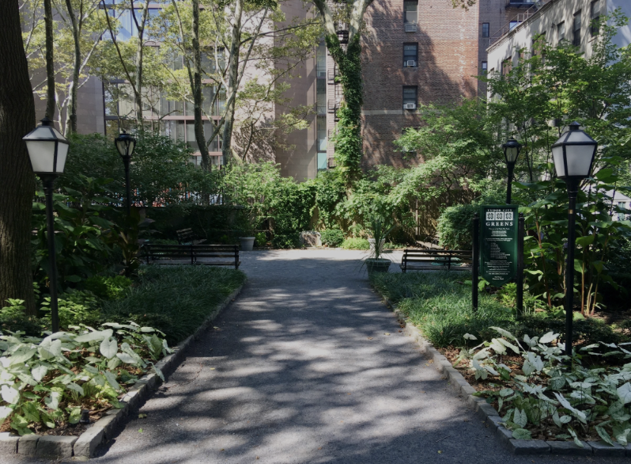
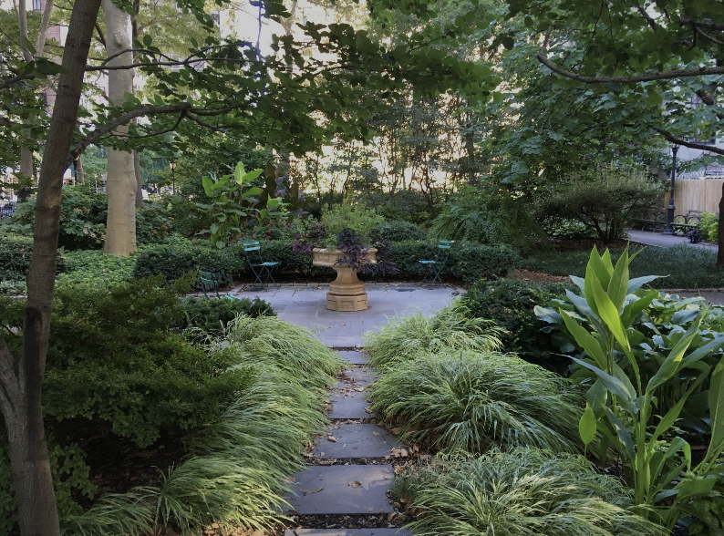
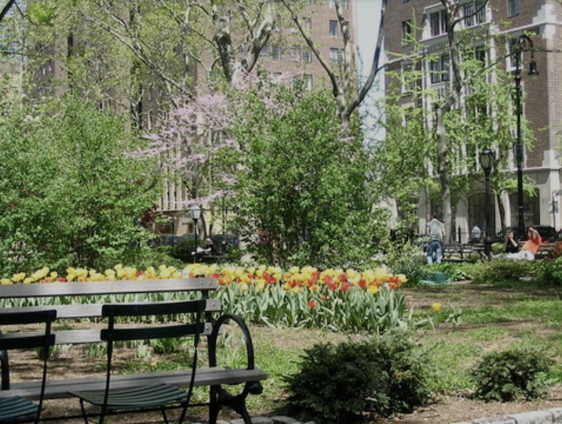

Tudor City Greens
Park Feature Image
Location: 53rd Street between Madison & Fifth Avenues
Gallery



Discover Hidden Pockets of Green in the Concrete Jungle
Location: 53rd Street between Madison & Fifth Avenues